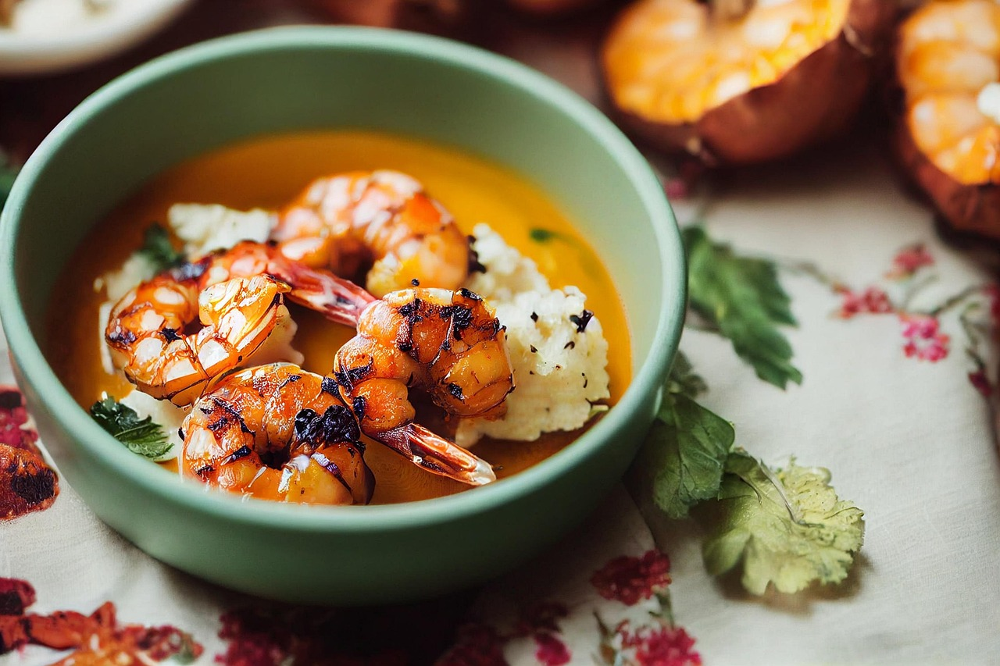

Knoblauchgarnelen-Bowl
 25 Min.
25 Min.
 simpel
simpel
 17.09.2025
17.09.2025
- 1 Baby-Ananas
- 2 rote Paprika
- 2 rote Zwiebeln
- 6 Knoblauchzehen
- 2 Zweige Rosmarin
- 300 g Basmati-Reis
- 800 g rohe Garnelen (küchenfertig; ersatzweise TK-Garnelen)
- 4 EL Olivenöl
- 1 Prise Salz
- 1 Prise Pfeffer
- 6 EL Chili-Ketchup
Zubereitung
 ca. 10 Min.
ca. 10 Min.
 Gesamtzeit ca. 25 Min.
Gesamtzeit ca. 25 Min.
- Die Ananas schälen, vierteln und vom Strunk befreien. Das Fruchtfleisch in dünne Scheiben schneiden. Die Paprika halbieren, Stielansatz, weiße Trennwände und Kerne entfernen. Die Paprikahälften waschen und in 1 cm breite Streifen schneiden.
- Die Zwiebeln schälen, halbieren und in dünne Streifen schneiden. Knoblauch schälen, fein hacken. Rosmarin abbrausen, trocken schütteln, die Nadeln abstreifen und grob hacken.
- Den Reis waschen und in ca. 800 ml kochendem Wasser 12-15 Min. garen. Garnelen mit Küchenpapier trocken tupfen.
- In einer großen Pfanne 2 EL Öl erhitzen. Die Paprika- und Zwiebelstreifen darin unter Ruhren bei mittlerer Hitze ca. 5 Min. anbraten. Die Ananasscheiben mit 1 TL Salz und 1/2 TL Pfeffer hinzufügen, alles verrühren und weitere 2 Min. braten. Danach die Gemüsemischung in vier Bowls verteilen.
- Das restliche Öl (2 EL) in der Pfanne erhitzen. Garnelen und Knoblauch darin unter Rühren ca. 3 Min. bei mittlerer Hitze braten. Ketchup und gehackten Rosmarin untermischen. Den Reis abgießen und neben dem Gemüse in den Bowls anrichten. Garnelen und Sauce darauf geben. Sofort servieren.
Rezept erstellt von

Akin